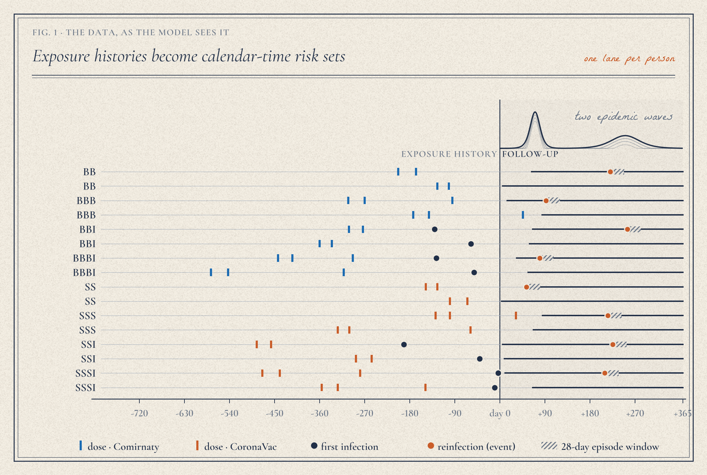
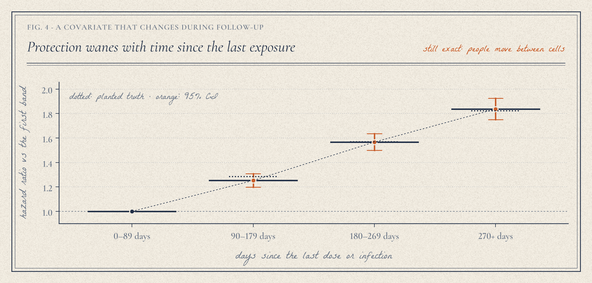

Vaccination · Infection · Immunity
Does a booster before your first Omicron infection protect you — or imprint you? VVI answers with an exact, sampling-free hazard model. Below, every number comes from synthetic cohorts, fitted live by the package.

I · Plant an effect, then find it
Each scenario is a cohort simulated by vvi.simulate, collapsed to its sufficient
statistics by vvi.aggregate, and fitted by vvi.fit. You choose the
planted imprinting effect — the true hazard ratio of reinfection for three Comirnaty doses
before infection (BBBI) versus two (BBI) — and the cohort size.
BBBI vs BBI · estimated
Ink tick: the planted truth. Dot and bar: the estimate and its 95% interval.
II · How big a cohort?
For a random sub-sample, the standard error of a log hazard ratio scales as 1/√n, so one fit
gives the power of the imprinting test at any cohort size (vvi.power). Drag the
true effect: a 300k sub-sample sees large effects; only the full cohort sees small ones.
Power · two-sided test at 5%
Dashed curve and dots: a true HR of 1.20, where each dot is the share of 30 simulated cohorts whose 95% CI lay above 1 — the analytic curve is checked, not assumed.
III · Cost
The likelihood depends on the data only through people at risk and events per covariate cell and calendar day. A binomial GLM on those counts has the same estimates and standard errors as the person-day model — on at most cells × days rows. Hover the points.
IV · Under the hood


